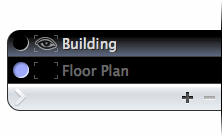
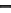
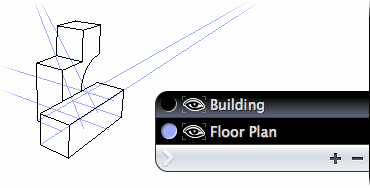
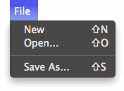
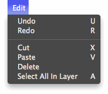
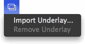
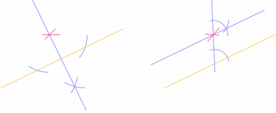

Alberti Help
Contents
- Introduction
- The Workspace
- Tools
- Snap Points
- Layers
- Hiding and Showing Layers
- Creating and Deleting Layers
- Naming Layers
- Changing Layer Order
- Color-Coding Layers
- The Main Menu
- Underlays
- Hotkeys
- Resources
Introduction
Alberti is a browser-based perspective drawing and layout application, named after Leon Battista Alberti, who quantified modern perspective drawing in his treatise "Della Pittura".
Why is Alberti needed?
Undertaking a complex, accurate perspective drawing requires an enormous amount of physical space. Depending on the requirements of the drawing, a 14x17 in. layout might require a drafting table 5 feet wide and 10 feet deep. Furthermore, you would need a number of impractically large tools: a straight-edge, a drafting triangle, possibly a compass fashioned out of a peg and string.
In short, it makes perfect sense to do this in software.
Then why not use an existing solution like AutoCAD or 3ds Max? Because these tools are overkill. Alberti provides a streamlined interface tailored specifically to rapid, natural perspective drawing.
The Workspace
When Alberti is first loaded, you will see an empty workspace. This is the canvas on which shapes are drawn. An 'X' marks the center of the workspace, which spans infinitely in all directions.

Fig. 1. The workspace center.
Navigating the Workspace
Zooming and Panning
Panning is the act of translating, or changing, the horizontal or vertical position of the workspace. To pan, hold down either the alt or E key. While holding down either key, click and drag to pan the workspace.
Zooming is the act of moving closer to or away from the workspace. To zoom in, scroll the mousewheel up. To zoom out, scroll down. Zooming occurs relative to the position of the mouse cursor; in other words, the point under the mouse remains stationary during a zoom, while other points move away from or converge toward the mouse depending on whether you are zooming in or out.
The Navigation Bar
Hovering at the top of the workspace is the navigation bar. The buttons here allow you to rapidly pan around the workspace.

Fig. 2. The navigation bar.
The home button ( ) centers the workspace in the browser window.
) centers the workspace in the browser window.
The other two buttons involve what are called markers. Markers can be placed anywhere in the workspace using
the marker tool. The left button ( ) pans
to the next marker, the right button (
) pans
to the next marker, the right button ( ), the previous marker (hotkeys
space and shift-space respectively). As you cycle
through markers, Alberti will also remember and pan to the last manually-panned position in the workspace.
), the previous marker (hotkeys
space and shift-space respectively). As you cycle
through markers, Alberti will also remember and pan to the last manually-panned position in the workspace.
Tools
Hovering at the left side of the workspace is the tool bar. To select a tool, click on it.
Most tools have hotkeys that allow you to select them with the keyboard. Hovering the mouse over a tool displays
its name and associated hotkey in brackets.

Fig. 3. The tool bar. Tools from top to bottom: Selection Tool, Line Tool, Arc Tool, Perspective Arc Tool, Bezier Tool, Marker Tool. The selection tool is selected.
Each tool is capable of performing an action or drawing a shape based on a series of steps (usually involving a mouse click). The number of steps involved varies from tool to tool, several of them having optional steps.
All tools follow the same convention: the optional steps can be skipped by either pressing enter/return, or by right-clicking (which is equivalent to a left-click followed by enter/return). This is referred to as completing the tool. You may revert to a previous step at any time prior to completing a tool by pressing the escape key. Each tool is discussed in detail below with optional steps indicated by faded step numbers.
 Line Tool
Line Tool
The line tool draws lines aligned to points. It can be thought of as a straightedge.
Steps
Click anywhere in the workspace to define a reference point.
Click to define a second reference point. The line will be drawn along the resulting path.
Click to place the beginning of your line.
Click to place the end of your line and complete the tool.
During step 2, the shift key may be held down to constrain the line to angles of 45°.
Arc Tool
The arc tool draws circles and circular arcs. It can be thought of as a compass.
Click anywhere in the workspace to place the center of the circular arc.
Click elsewhere to set the radius of the arc.
Click to begin sweeping an arc.
Click elsewhere to complete the arc.
Repeat steps 3-4 as desired, or press enter or right-click to complete the tool.
During step 2, the shift key may be held down in order to match the last-used arc radius. This is crucial for many geometric constructions.
 Perspective Arc Tool
Perspective Arc Tool
The perspective arc tool draws arcs in perspective, thereby producing ellipses or elliptical arcs. This is useful for constructing arches, circular windows, etc. in perspective. When approaching such a problem by hand, one generally starts with a rectangle in perspective and then inscribes the ellipse in that rectangle. The perspective arc tool operates on the same principle.

Fig. 4. An ellipse projected in perspective.
Steps
Click to place the first "corner" of the perspective projection.
Click to place the second corner.
Click to place the third corner.
Click to place the fourth corner. This creates the projected ellipse.
Click to begin sweeping an arc.
Click elsewhere to complete the arc.
Repeat steps 5-6 as desired, or press enter or right-click to complete the tool.
In order to accurately place the corners of the ellipse projection, use Alberti's snap points feature.
 Bezier Tool
Bezier Tool
The bezier tool allows you to draw arbitrary curves. It can be thought of as a French curve.
Steps
Click to place the beginning of the curve.
Click to place the end of the curve.
Click to place the control point of the curve. This completes the curve.
It is possible to accurately construct a curve in perspective by using snapping to place its control points.

Fig. 5. The ogive of a lancet window is constructed by placing the control points of its constituent curves at the intersections of appropriate vanishing lines.
 Selection Tool
Selection Tool
The selection tool selects shapes. Once a shape is selected, it can be deleted by pressing backspace or delete, or by selecting Edit > Delete from the main menu. You can also cut the shape by selecting Edit > Cut. Selections are indicated by dashed lines and black endpoint markers.

Fig. 6. An unselected shape (left)
and a selected one (right).
In Alberti, once a shape is created it cannot be modified, even when selected. This is admittedly unusual for a vector-based drawing program, but is by design. The idea is that each shape is like a mark made by a pencil; it can be erased, but not changed.
Steps
Click and hold the mouse button down.
Drag the mouse to expand the selection box.
Release the mouse button. Any shapes enclosed by or intersecting with the selection box will be selected.
To add shapes to or remove shapes from an existing selection, simply hold down shift as you release the mouse button in step 3. Selected shapes within the selection box will be deselected while unselected shapes will become selected.
It is possible to "pick" single shapes by simply clicking on a shape without dragging. You can also pick intersections using snapping. All shapes that intersect at the snap point will be selected.
 Marker Tool
Marker Tool
Use the marker tool to place markers around the workspace. Markers are best placed at landmarks that you often frequent, such as vanishing points.
Steps
Click anywhere in the workspace to place a marker.
Cycle between markers at any time using the navigation bar or associated hotkeys.
Snap Points
Snap points bring precision to the drawing process by automatically detecting potential snap points (e.g. intersections and tangencies). It is enabled by pressing and holding down the D key. When the tool crosshair is held near a snap point, a red, circular snap indicator appears at the snap point, and the tool "snaps" to this point. Use cases are discussed below.
Intersections
Alberti will detect intersections between a line and any shape, as well as intersections between circular arcs.
Fig. 7. Move the mouse over the image to see intersection detection in action with the line tool.
Tangency
Currently, Alberti detects only one type of tangency: that between a line and a perspective arc. This is useful for precisely finding the edge of a rounded form in perspective.
Fig. 8. Move the mouse over the image to see tangency detection involving the line tool and a perspective arc.
Layers
Hovering at the right side of the workspace is the layer panel. Layers serve to organize shapes into groups; for instance, if you were drawing a building, you might use one layer for the floor plan, and another for the building itself.
Fig. 9. The layer panel with two layers.
In figure 9 above, the layer named "Building" is currently selected. To select a layer, simply click on it, or use the up-arrow and down-arrow keys to cycle through them. Shapes are always drawn into the currently selected layer.
You can use the textured () button at the bottom of the layer panel, or the backslash (\) key to collapse and expand the layer panel.
Fig. 10. The layer panel in its collapsed state.
Hiding and Showing Layers
The contents of a layer can be hidden by clicking its eye () icon. A hidden layer cannot be selected and is therefore grayed out. At least one layer must remain visible at all times. To show a layer, click the space where its eye icon once resided ().
Creating and Deleting Layers
Use the () button at the bottom of the layer panel to create a new layer. Use the () button to delete the current layer. At least one visible layer must exist at all times.
Naming Layers
To change a layer's name, double-click on it. Hit enter to finalize the name change, or escape if you decide not to change it after all.
Changing Layer Order
To change the order of a layer, simply drag it to the desired position below or above another layer. During the drag operation, a white arrow indicates where the layer will be inserted.
Color-Coding Layers
Layers are color-coded to aid with organization and clarity. A layer's color determines the stroke color of its shapes.
Fig. 11. Color-coded layers and their shapes.
To change a layer's color, click on its circular color well. A color picker will appear allowing you to select a color. Click outside the picker or press enter to finalize the color, or press escape to cancel.
The Main Menu
Hovering at the top of the workspace is the main menu bar, much like one you would find in a desktop application.
Fig. 12. The main menu.
File
The file menu allows you to create, import, and export Alberti documents. Alberti documents use the SVG format which is understood by a wide variety of illustration programs.
Fig. 13. The file menu.
Saving Files
For security reasons, your browser will not allow Alberti to save files directly to your hard drive. Because of this, several steps are involved in saving a file:
Select Save as... from Alberti's file menu. Alberti will open a new browser window containing the raw data of the document.
Use your browser's file menu to save the file to your hard drive. Many browsers allow you to save files in several formats. Make sure you select the option to save the complete web page source only! Otherwise Alberti will not be able to import the resulting file.
Close the window and resume working.
The default file name for documents is "Alberti Document". Chances are you will use a different name. However, due to browser limitations, Alberti is not able detect the name of the saved file. This means that every time you save, you will have to rename the file from "Alberti Document" to the unique name. To work around this, you can save the file and immediately open it as described below.
Opening Files
Select Open... from Alberti's file menu. A standard file dialog box will appear allowing you to select a file previously saved with Alberti. Assuming that the file was saved correctly, the document will load and appear in the workspace.
After opening a document, Alberti will be able to read its file name and use it in subsequent Save As... operations.
Edit
Fig. 14. The edit menu.
Undo and Redo
Most actions in Alberti are undo-able. Select Undo to undo an action such as deleting a shape or layer, and redo if you change your mind. Alberti will remember the last hundred actions performed.
Cut and Paste
Select any number of shapes and choose Cut to transfer the shapes from the workspace to Alberti's internal clipboard. These shapes can then be pasted into another layer or document.
Underlays
Generally, one doesn't compose an image using perspective construction directly. It makes more sense to create a sketch and use the principles of perspective to "square" the drawing (correct for perspective errors, check the relative scale of objects in the image, etc.). To this end, Alberti is able to import underlays—images placed under the Alberti workspace that serve as a reference for construction.
Importing
Use the underlay menu at the top of the Alberti workspace to import underlays.
Fig. 15. The underlay menu.
Select Import Underlay... to choose an image file from your hard drive to use as an underlay. Once imported, the underlay can be removed using Remove Underlay.
Underlays require a lot of processing power and are best suited to browsers featuring hardware acceleration. Performance may be sluggish otherwise.
Opacity
After importing an underlay, you can adjust its opacity with the opacity slider that appears next to the underlay menu.
Fig. 16. The underlay opacity slider.
With the slider at its rightmost position, the underlay becomes fully opaque; at its leftmost position, the underlay is hidden altogether.
Hotkeys
| 1 | Selection tool |
| 2 | Line tool |
| 3 | Arc tool |
| 4 | Perspective arc tool |
| 5 | Bezier tool |
| Alt, E | Enable panning |
| D | Enable snapping |
| Shift | Enable tool constraint (behavior varies depending on tool) |
| Escape | Previous tool step |
| Enter, Return | Complete tool |
| Right-click | Left-click, then complete tool |
| Space | Next marker |
| Shift-Space | Previous marker |
| Up Arrow | Next visible layer |
| Down Arrow | Previous visible layer |
| Backslash (\) | Collapse/expand layer panel |
| Shift-N | New document |
| Shift-O | Open document |
| Shift-S | Save document |
| Z | Undo |
| Shift-Z | Redo |
| X | Cut |
| V | Paste |
Resources
Alberti has a relatively low-tech tool set, reflecting drafting tools that have been in use since the Renaissance. In time, this tool set will grow. To get the most out of its existing features, you should have a basic familiarity with geometric construction and perspective.
Geometric Construction
Geometric construction refers to the use of a ruler and compass (in Alberti's case, the line tool and arc tool) to construct various shapes.
Fig. 17. Perpendicular and parallel line constructions via the line and arc tools.
Understanding how to perform a handful of these basic constructions is enough to handle nearly everything related to the process of perspective drawing.
Math Open Reference covers all the requisite constructions and more.
Perspective
There is endless material on perspective drawing available throughout the internet. A good place to go if you're looking for depth is Bruce MacEvoy's massive treatise on the subject. Every aspect of perspective drawing is covered from first principles to shadow constructions.